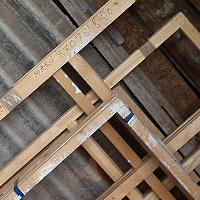
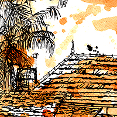
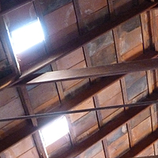
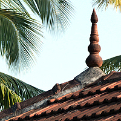

Home | Art Museum | Homestay | Photos | Latest | Contact
   
SYLVIANDER HOUSE ART MUSEUM
Exhilarating locale for art exhibition and permanent collections.
WATER, THE MIRROR OF THE WORLD
Kerala abound with water and rains. Casual eyes just see them as water drops. But its content is pulsating energy. It has Soul. It is life. It is alive. It communicates us in myriad ways. It creates and reflects many moods. It never, ever remains the same. It is change, the very mirror of life and world.
Why an Art Museum at Alappuzha?
ALAPPUZHA, KERALA, INDIA
Serene abode for creative people to assemble and engage in dialogues and performances.
Event opening on Friday, December 21, 2012 with the show of paintings and installations by Alexander Devasia
(December 21, 2012 - March 21, 2013)

DOWNLOAD EXHIBITION BROCHURE

VIEW PAINTINGS
While I was a young artist, there was not any space to exhibit paintings for public viewing in Kerala. Decades later, recently art appreciation got its due recognition in India. Art galleries started coming up in many cities. But my native place Alappuzha still lagged behind! Travelling and working a long time in India and abroad and after years of toil my vision to set up an Art Museum is being realised, at my bosom place - Alleppey - together with my writer-artist wife Sylvie Bantle from Germany.


DIRECTIONS TO SYLVIANDER HOUSE: PDF | MAPS
Tel: +91.9645817014 Email: Life@sylvianderhouse.com Web: www.sylvianderhouse.com